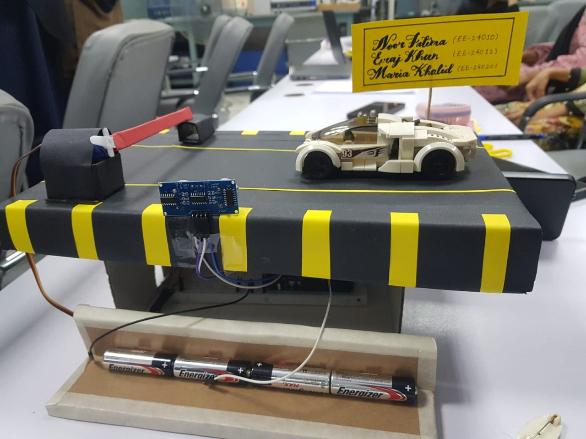
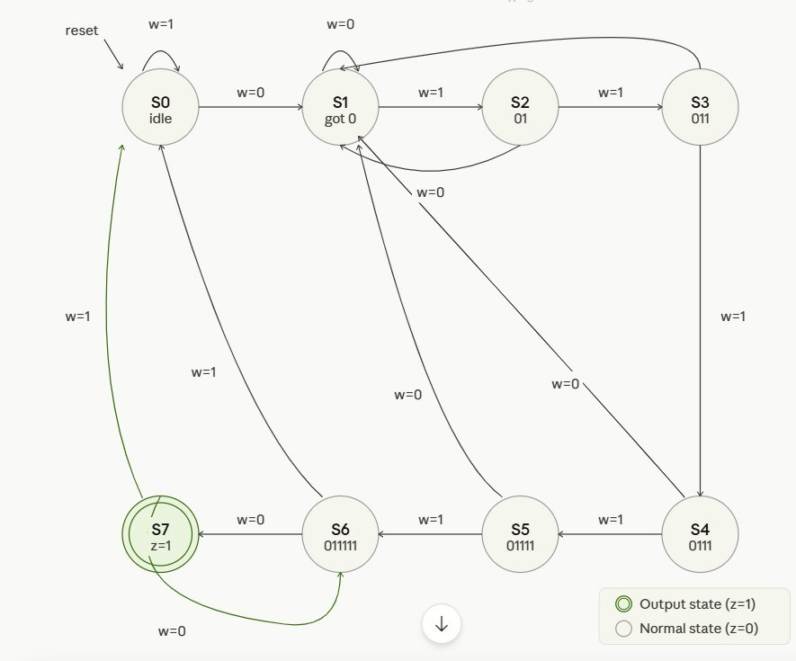
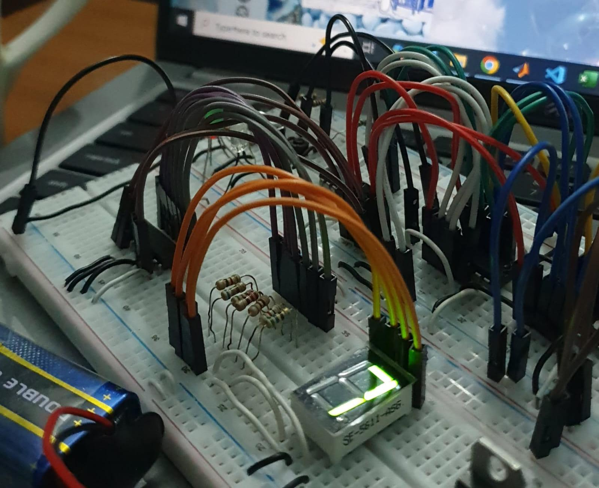

Automatic Door System
An Arduino-based automatic door system using ultrasonic sensors to detect motion. It controls a servo motor to simulate real-time smart entry automation.
I am Maria Khalid, a second-year Electrical Engineering student exploring front-end web development. I enjoy building clean, structured, and responsive interfaces using HTML and CSS, and I am currently focused on strengthening my skills through hands-on projects.
Hi! I am Maria, a second-year Electrical Engineering student with an interest in front-end web development and digital systems. Alongside my academic studies, I am learning HTML, CSS, and responsive design to build clean and structured user interfaces.
I enjoy working on problems that combine logic and design, and I am especially interested in creating simple, accessible, and well-organized web layouts. Through my engineering background and ongoing projects, I am developing a strong foundation in both analytical thinking and front-end development
Currently, I am focused on improving my web development skills through hands-on practice and project-based learning.

An Arduino-based automatic door system using ultrasonic sensors to detect motion. It controls a servo motor to simulate real-time smart entry automation.

A digital logic design implemented using Verilog HDL to detect specific input sequences. It demonstrates finite state machine behavior through defined states and transitions.

A combinational logic circuit designed using multiplexers and decoders. It processes weighted inputs and displays results using a BCD to seven-segment output system.